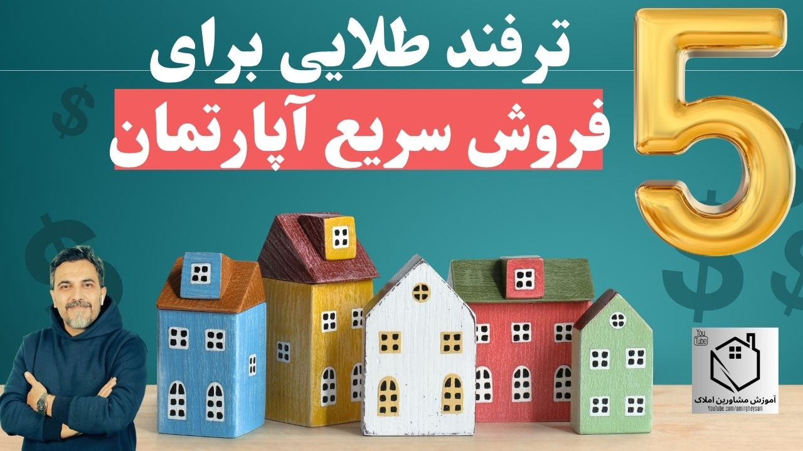

توی کامنتها زیاد از من پرسیده میشه: «چهجوری خونهمون رو سریعتر بفروشیم؟» خیلی وقتها صاحب ملک فکر میکنه آپارتمانش یه ایراد اساسی داره — طبقه بالاست، پارکینگ نداره، یا هر چیز دیگهای — و همین باعث میشه ماهها فایلش روی دستش بمونه. اما بعد از ۲۵ سالی که توی این حرفه بودم و از بچگی با املاک بزرگ شدم، میتونم بگم اکثر مواقع مشکل جای دیگهایه. در این مقاله، ۵ راهکاری رو باهاتون در میون میذارم که با رعایتشون، فروش خیلی از فایلهایی که فکر میکردیم اصلاً مشتری نداره، شکل گرفته.
چرا نگهداشتن یک فایل، خودش هزینه دارد؟
قبل از رفتن سراغ راهکارها، یک نکته رو باید در نظر داشته باشید: نگهداشتن یک ملک برای فروش، هزینهی پنهان زیادی داره. اگه خونه خالی بمونه، نمیتونید اجارهاش رو بگیرید؛ اگه جای دیگهای ساکن هستید، دارید همزمان هزینهی نگهداری و هزینهی سکونت رو پرداخت میکنید؛ و خیلی وقتها هم مجبورید برای ملک خالی سرایدار یا نگهبان بذارید. با این حساب، فروش سریعتر فقط یک ترجیح نیست، یک صرفهجویی واقعیه.
۱ قیمتگذاری هوشمند
مهمترین پارامتر در هر معاملهای، قیمته. خیلی از فروشندهها بدون اینکه متوجه بشن، قیمت رو بالا میذارن — چون فکر میکنن نقاشی تمیزتر، کابینت بهتر یا بالکن پوشیدهشدهشون باید چند میلیون قیمت رو بالا ببره. اما اینجور آپشنها روی قیمت پایه تاثیر چندانی ندارن؛ دقیقاً مثل خرید ماشین که مدل و سال ساختش قیمت پایه رو تعیین میکنه، نه رینگ و ضبط. بهترین معیار برای فهمیدن اینکه قیمت درست گذاشتید یا نه، تماسهایی هست که دریافت میکنید: اگه اکثر تماسگیرندهها میگن «قیمتتون بالاست»، یعنی باید تجدیدنظر کنید. و اگه بیش از سه، چهار هفته آگهیتون بدون نتیجه مونده، بهتره آگهی رو موقتاً بردارید تا ملک در ذهن بازار «تکراری» و «سوخته» نشه.
۲ خانه را برق بینداز
دقیقاً مثل وقتی که میخواید ماشینتون رو بفروشید و یه کارواش میبرید، خونه هم قبل از بازدید نیاز به یک «برقانداختن» ساده داره: لامپهای سوخته رو عوض کنید، همهی اتاقها روشن باشه (چون خیلی از مشتریها فقط شب وقت بازدید دارن)، سرویس بهداشتی تمیز باشه، هواکشها سالم باشن، و خونه جمعوجور و بیبو باشه. این جزئیات کوچیک، تاثیر روانی بزرگی روی تصمیم خریدار میذارن — حتی اگه ملک قراره کلنگی فروخته بشه و بازسازی بشه، باز هم تمیزی و مرتب بودنش در نگاه اول، خریدار رو جذب میکنه.
۳ عکاسی حرفهای
لازم نیست حتماً پهباد یا عکاس گرون بگیرید، اما عکس خوب واقعاً مهمه. یک عکاس حرفهای میدونه از کدوم زاویه باید عکس بگیره تا فضا بزرگتر و جذابتر دیده بشه. اگه خودتون با موبایل عکس میگیرید، حتماً هم با نور طبیعی روز و هم با نور مصنوعی شب عکس بگیرید تا خریدار تفاوت رو ببینه، و اگه نمیدونید چطور شروع کنید، کافیه از یک ابزار هوش مصنوعی مثل جمینای یا چتجیپیتی راهنمایی بخواید.
۴ پاسخگویی سریع
این روزها مشتری منتظر نمیمونه. اگه اولین تماس یا پیام رو دیر جواب بدید، مشتری رفته سراغ فایل بعدی. اگه خودتون نمیتونید فوری بازدید بدید، از یک دوست یا همسایه بخواید کلید رو بهش بدید و همراهی کنه. پاسخگویی و بازدید فوری، یکی از موثرترین کارهایی هست که میتونید برای تسریع فروش انجام بدید.
۵ کار با یک مشاور حرفهای
فروش رأساً و بدون واسطه، معمولاً ایدهی خوبی نیست. یک مشاور خوب، شناخت واقعی از بازار داره، مشتری آماده داره، و میتونه وقتی معامله به بنبست میخوره (مثلاً سر قیمت)، بهعنوان یک واسطه بیطرف وارد عمل بشه و مذاکره رو نجات بده — کاری که خودِ فروشنده معمولاً نمیتونه مستقیم انجام بده. برای پیدا کردن یک مشاور خوب، نظرات واقعی (نه تبلیغاتی) گوگلمپ و شبکههای اجتماعی رو بررسی کنید یا از همسایههاتون بپرسید کدوم آژانس منطقه واقعاً کار میکنه.
تبلیغ را فقط به یک پلتفرم محدود نکنید
خیلی از فروشندهها فقط توی دیوار آگهی میکنن. اما یک تبلیغ حرفهای باید چند پلتفرم رو همزمان پوشش بده: علاوه بر دیوار، شیپور، اینستاگرام و حتی استوریهای شخصی هم میتونن یک خریدار غیرمنتظره (مثل یک همسایه که دوست داشته این ملک رو بخره ولی خبر نداشته) رو به معامله برسونن.
جمعبندی
فروش سریعتر خانه، بیشتر از هر چیز به این ۵ اصل برمیگرده: قیمتگذاری واقعبینانه، آمادهسازی و تمیزی ملک، عکاسی خوب، پاسخگویی فوری، و کار با یک مشاور حرفهای. هیچکدوم از اینها پیچیده یا پرهزینه نیستن؛ فقط نیاز به توجه و برنامهریزی درست دارن. اگه فایل شما هم مدتیه روی دستتون مونده، همین امروز یکی از این ۵ نکته رو شروع کنید.